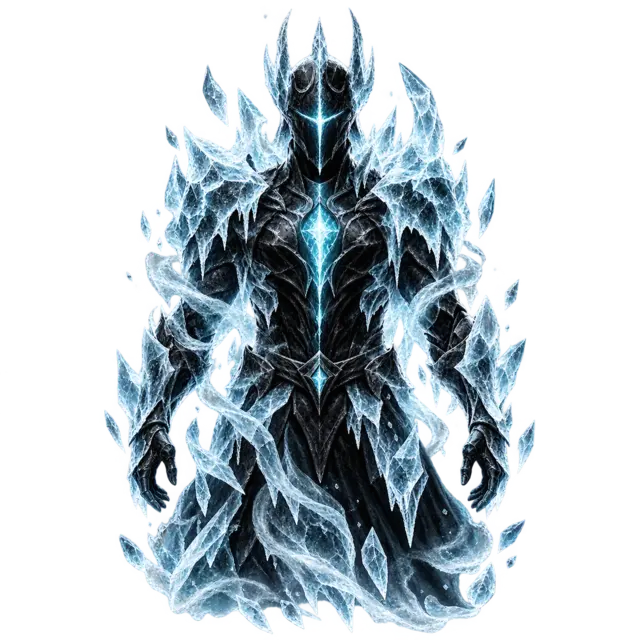
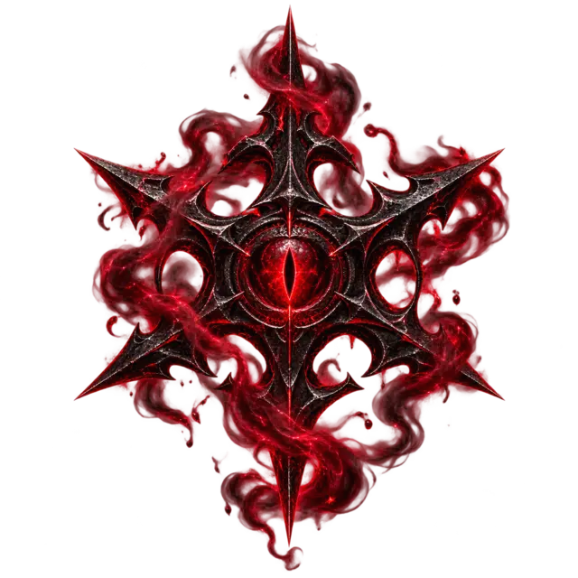
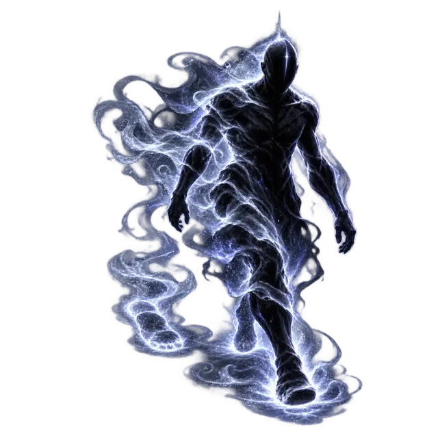
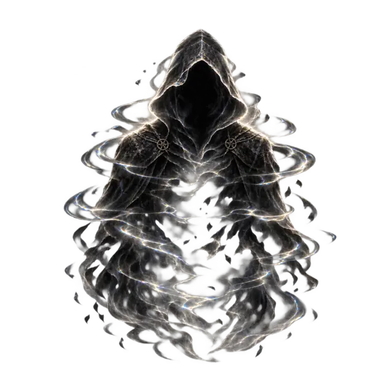
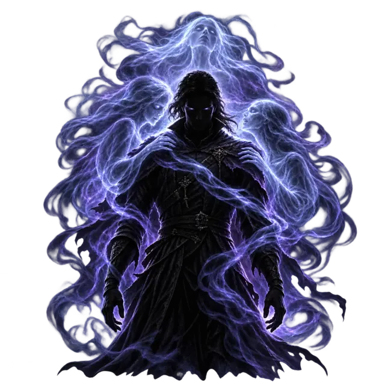
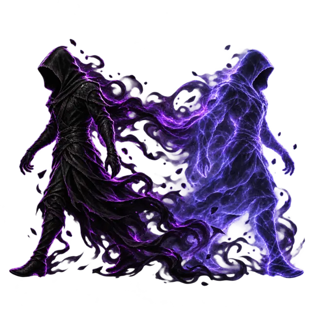
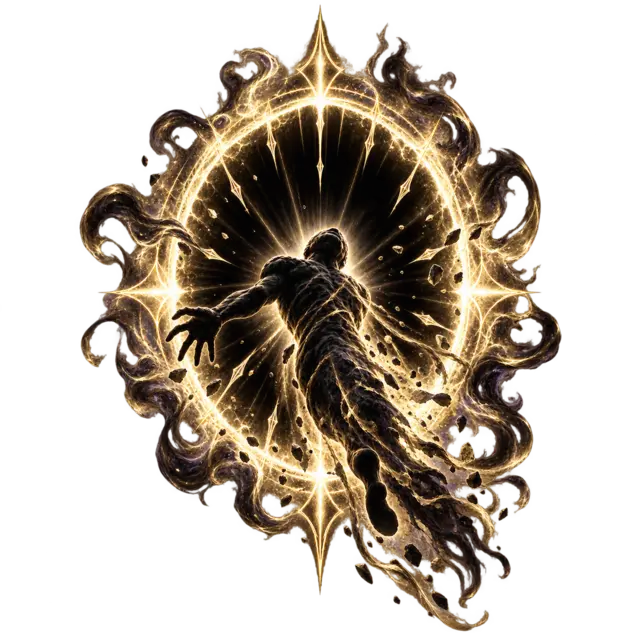
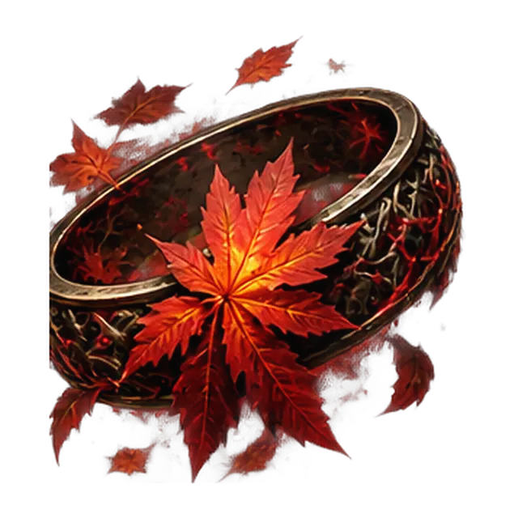

Épée longue éveillée • +10 toucher • dégâts radiants • JS CON 15 : aveuglé 1 tour selon l’effet de la lame. Critique naturel sur 20, ou 19–20 si Malédiction active.
☾ Sélhane
Épée longue éveillée • +10 toucher • dégâts psychiques • JS SAG 15 : désavantage à la prochaine attaque selon l’effet de la lame. Critique naturel sur 20, ou 19–20 si Malédiction active.
✦ 3e attaque
Action bonus • si une lame a raté, réattaque avec elle pour tenter le Sceau ; sinon Solinar par défaut offensif.
☠ Châtiment occulte
À garder si possible pour un critique ou une cible prioritaire • 6d8 dégâts + cible à terre selon ta fiche.
🔴 Décharge occulte
Attaque à distance • +8 toucher • 1d10+4 force • jusqu’à 2 rayons par tour • contre la cible maudite : +4 dégâts et critique sur 19–20.
🩸 Soif ténébreuse
Morsure sur cible neutralisée ou empoignée • 1 perforant + 4 nécrotiques si alimentation • 4 PV temp • 1/repos court ou long.

Armure d’Agathys
Avec un slot de pacte N5 : 25 PV temporaires • tant qu’il en reste, une créature qui te touche au corps-à-corps subit 25 froid.

Maléfice
Concentration • moins prioritaire avec cette construction.

Foulée brumeuse
Action bonus • mobilité.

Invisibilité
Concentration.

Voile spirituel
Concentration • setup de gros combat • avec un slot N5, ajoute 2d8 à chaque attaque qui touche.
Porte dimensionnelle
Téléportation longue portée.

Ombre d’égarement
Sort connu niveau 4.

Bannissement
JS CHA DD16 • neutraliser une cible quand le corps-à-corps est défavorable.
Perturbations synaptiques
N5 • JS INT DD16 • 8d6 psychiques • moitié des dégâts en cas de réussite.
Les autres cibles sont comptées comme réussissant le JS et prennent la moitié des dégâts.
🛡 Dégâts reçus
Traitement automatique : PV temporaires → PV • Armure d’Agathys si CàC • test de concentration si nécessaire avec avantage d’Esprit occulte pris en compte automatiquement.
Le DD de concentration est calculé automatiquement : max(10, moitié des dégâts).
Tombeau de Lazarus
Réaction • 100 PV temporaires • monolithe d’ambre • inactif 1 tour selon ta fiche.
Les PV temporaires ne se cumulent pas. Le compagnon te demande avant de remplacer une source existante.
Solinar & Sélhane
Vestige de la Divergence • état éveillé • bonus d’arme +2 • finesse + légère pour Kentaro • les deux comptent comme armes de pacte.
Sceau d’éclipse
Parade crépusculaire +1 CA en main
Pas entre les rayons 1/repos court
Vision de la Pierre
1/jour • 12 s • voir à travers illusions et objets solides dans un rayon de 18 m • avantage sur la prochaine attaque.
◉ Anneau de stockage de sorts
Capacité totale : 5 niveaux de sorts. L’espace occupé dépend du niveau de l’emplacement utilisé pour stocker le sort.
0/5 niveaux occupés 5 niveaux libres
Quand Kentaro stocke lui-même un sort avec son emplacement de pacte N5, il occupe 5/5 dans l’anneau, même si le sort est normalement de niveau inférieur. « Stocker / allié » permet de comptabiliser un sort placé par un autre lanceur avec un emplacement N1 à N5.
Perle de pouvoir
Objet magique listé dans ton équipement.

Bague de feuille morte
Objet lié listé sur ta fiche.
Kane
Relique familiale • katana / épée longue +1 transmis dans la famille Amane. À traiter comme un lien de mémoire et d’héritage, pas comme une simple arme secondaire.
👻 Spectre maudit
Onglet dédié pour une lecture plus confortable sur iPad. Suivi rapide de l’état du spectre, de ses PV et des dégâts qu’il subit.
État Inactif
PV 22
PV temp 5
CA 12
Présence mauditeEn attente de Kentaro
Le bouton Appliquer retire d’abord les PV temporaires du spectre, puis ses PV. Quand ses PV tombent à 0, il repasse automatiquement à l’état Inactif.
Résumé tactique
Petit pense-bête visuel pour gérer le spectre sans repasser par l’onglet Combat.
Profil rapide CA 1222 PV5 PV tempVol 15 m
Offense Absorption de vie : +8 pour toucher • 3d6 nécrotiques.
Flux conseillé 1. Invoquer 2. Attaquer 3. saisir les dégâts reçus puis Appliquer.
Identité & comportement
Kentaro hors combat
Loyal Neutre • méfiant avant d’accorder sa confiance.
Grand Voyageur • observe les coutumes locales avec fascination.
Souvenirs incomplets • passé fragmenté, nostalgie de sa patrie.
Âmes fusionnées • identité marquée par plusieurs héritages.
Nourriture & sang • rapport inhabituel, à jouer comme un détail révélateur.
Relations
Liens importants
Jemal DormyCompagnie CréolePatrie / famille Amane
Charme prédateur
Préparer l’approche
Rappel de jeu : nécessite une conversation préalable d’environ 1 minute. Le compagnon suit seulement la préparation ; il n’invente pas de règle supplémentaire.
Aucune approche préparée.
Outils sociaux
Infiltration & voyage
Bague d’échange de visages Identité, infiltration, faux-semblants.